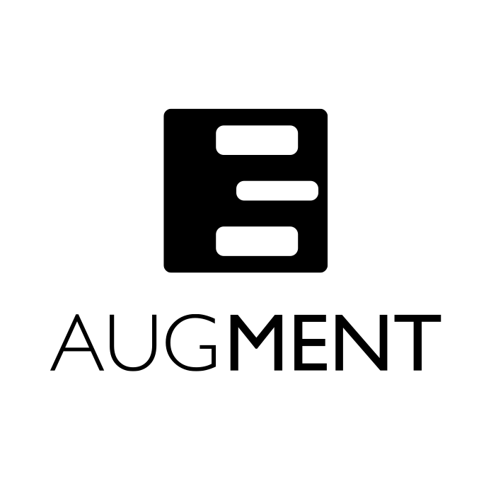
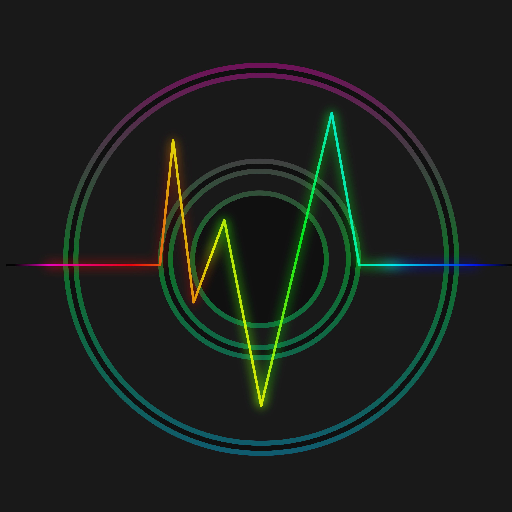
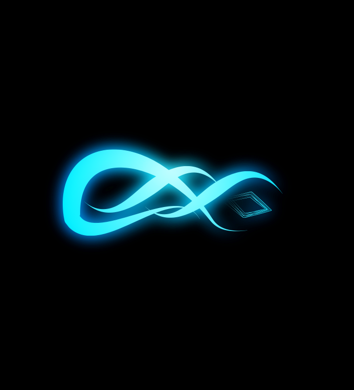

design

Augment
Concept

Chrome
Old Logo
Remora
Aerospace Startup

Dawn
Old Logo
Tidbits
Potential Startup

Foci
Music Curator
Startups and Students
Database Search Engine
Project Manager
Location Based Alarms
Programming Notes
Daily News Reports
"The clouds cry, the gusts scream"
"Nothing stoppin' us from being up next"
"All my worries are washed away"
"Just to reach our home... find our home"
Ed Sheeran - Perfect
Niall Horan - Slow Hands
Concept
Old Logo
Aerospace Startup
Old Logo
Potential Startup
Music Curator